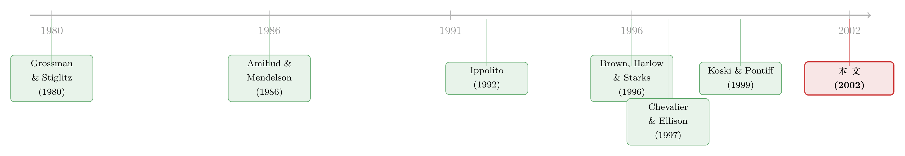

三分之二的基金都允许炒衍生品——这到底是放虎归山，还是精打细算？
本文读的是 Deli & Varma (2002, Journal of Financial Economics)：他们用 7,095 只共同基金的合同条款问了一个看似简单的问题——基金到底允不允许经理碰衍生品？结论是，越能从衍生品里省下交易成本的基金越倾向于放行，而且基金只放行那些和自己组合"对得上"的衍生品。换句话说，决定权背后的逻辑是效率，不是经理的机会主义。
1 一个本该"全面禁止"的东西，为什么三分之二的基金都允许？
先讲一个让人不太舒服的事实。
衍生品 (derivatives) 在共同基金经理手里，是一件危险的工具。它几乎不需要预先掏出本金，却能把组合的风险敞口放大或反转。学术界很早就指出，基金经理对风险的偏好，未必和投资者一致：业绩落后的经理有动机"赌一把"（go for broke），业绩领先的经理则倾向"躺平"（coast）。而衍生品，恰恰是实现这种风险操纵最趁手的杠杆（Brown et al., 1996；Hentschel and Smith, 1995）。
按这个逻辑往下推，结论应该很干脆：既然允许投资衍生品会带来代理成本 (agency cost)，而看不出有什么明显好处，那么理性的基金就应该系统性地禁止它。
可现实偏偏相反。Deli 和 Varma 翻遍了 1997 财年的基金合同，发现有 65.2% 的基金，明文允许经理至少投资一种衍生品。
这就构成了本文的张力：一个理论上该被普遍禁止的东西，实际上被普遍允许了。为什么？
这里要厘清一个本文反复强调的区分：作者研究的不是基金用没用衍生品，而是基金的合同允不允许用。前者是事后的行为，后者是事前写进基本投资政策、需要股东投票才能更改的"授权"。这是一个契约 (contracting) 问题，而不是一个交易行为问题。
2 把"为什么允许"翻译成一个可以检验的命题
作者给出的答案是：衍生品并不是只有代理成本，它还带来交易成本上的好处 (transaction-cost benefit)。一只基金到底允不允许碰衍生品，是在这两者之间做权衡。
那好处具体是什么？文章拆成了三块：
- 更便宜的风险敞口。要获得某个风险暴露，直接去交易底层证券是要付交易成本的；用衍生品往往更便宜。而且，底层组合越不流动（illiquid），这种节省就越大（Koski and Pontiff, 1999）。
- 更省的流动性交易成本。基金会因为申购赎回的现金流冲击而被迫交易，而这种"流动性驱动的交易"是要亏钱给知情交易者的（Grossman and Stiglitz, 1980；Edelen, 1999）。用衍生品来吸收现金流冲击，比真去买卖底层证券便宜。
- 更低的持现机会成本。基金留着现金不投出去，投资者要承担一份机会成本（Chordia, 1996）。用一笔名义本金等于现金量的衍生品头寸，可以一边保留敞口、一边把闲钱的机会成本省下来。
到这里，一个自然的问题是：这套"好处"听上去很美，可它怎么检验？毕竟交易成本的节省看不见摸不着。
本文最聪明的一步，是把这个抽象的好处，翻译成了横截面上可观测的组合特征。逻辑很直白：如果"允许衍生品"是被交易成本好处驱动的，那么好处越大的基金，就应该越倾向于允许。于是作者挑了三个能代表"好处大小"的特征：
- 股票型 vs. 债券型——决定了哪一类衍生品对它有用；
- 海外 vs. 国内——海外证券更不流动、交易成本更高（Solnik, 1996），所以海外基金的节省更大；
- 高换手 vs. 低换手——换手率高意味着流动性交易更频繁，省钱空间更大（Edelen, 1999；Nanda et al., 2000）。
3 识别的关键：不是"允不允许"，而是"允许哪一种"
如果故事只停在"好处大的基金更爱允许衍生品"，它其实并不足以把效率和机会主义两种解释分开。因为一只想给经理留下风险操纵空间的基金，同样可能笼统地允许"某种衍生品"。
但真正关键的一步在于：作者手上的数据，能区分衍生品的底层资产类型——是挂在股票上的，还是挂在债券上的。N-SAR 表格里，基金要逐项申报六类衍生品是否被允许：股票期权、股指期权、股指期货、股指期货期权、债券期权、利率期货。
于是反转出现了。如果驱动力是效率（匹配组合、省交易成本），那么基金应该只允许和自己组合对得上的那一类：股票型基金允许股票衍生品，因为它能省钱；却没理由允许债券衍生品——那只会平白给投资者塞进一份他们没有讨价还价过的风险敞口。债券型基金则反过来。
而如果驱动力是机会主义（给经理留操纵空间），那么允许哪一类衍生品，就不该和组合类型这么整齐地对应——因为操纵风险这件事，本身不挑底层资产。
这正是本文识别策略的精髓：用"允许的衍生品种类与组合类型是否匹配"，来给两种竞争性解释做裁决。匹配，则支持效率；不匹配，则支持机会主义。这个思路与"企业为什么、以及对冲了多少风险"的那类文献是相通的（关于后者，可参见《公司到底用衍生品对冲了多少风险？》）。
4 数据：一份藏在监管申报里的"合同条款"
数据来自 SEC 的 EDGAR 系统上的投资公司 N-SAR 表格——这是所有受监管投资公司每年必须申报两次的文件，详细记录了基金与顾问之间的契约安排。作者抓取的是 1997 财年的 N-SARB（覆盖全年），时间跨度从 1997 年一季度到 1998 年二季度共六个季度，基本穷尽了当年所有向 SEC 申报的开放式基金。
剔除掉数据不全的样本后，最终 7,095 只基金。观测单位是单只基金。几个关键变量：Equity/Debt（主投股票还是债券）、Foreign/Domestic（主投海外还是国内）、Turnover（换手率，定义为买入与卖出中较小者除以平均月净资产）、以及 FundSize（基金规模，单位百万美元）。
描述统计里有几个数字值得记一下：样本在股票型（50.1%）和债券型（49.9%）之间几乎对半分；绝大多数（86.8%）主投国内；换手率的均值（中位数）是 75.6%（44.0%），分布极偏，最高竟有 8,504%；基金规模均值 5.68 亿美元、中位数 1.08 亿美元，同样右偏。
5 结果：先看"赤裸裸"的单变量
作者先不急着上模型，而是把单变量比较直接摆出来——这往往是最有说服力的部分。
第一，谁更爱允许衍生品？ 全样本 65.2% 允许至少一种；但股票型基金里这个比例是 79.8%，债券型只有 50.5%；海外基金 87.7%，国内基金 61.8%；高换手基金 79.8%，低换手基金 50.4%。所有这些差异都在 1% 水平上显著（t 值分别高达 27.21、20.83、27.26）。三个预测里，海外、换手这两个方向完全符合预期。
第二，也是真正的胜负手——基金允许的，是不是"对得上"的那一类？ 在股票型基金里，79.4% 允许股票衍生品，却只有 61.2% 允许债券衍生品；在债券型基金里，50.1% 允许债券衍生品，而允许股票衍生品的只有 18.8%。
请盯着 18.8% 这个数字看一会儿。一只债券基金，几乎五个里有四个明确不允许经理碰股票衍生品。如果允许衍生品只是为了给经理留操纵风险的口子，这种"挑食"是讲不通的——股票衍生品同样能操纵风险。唯一讲得通的解释是：股票衍生品对一只债券基金没有交易成本上的用处，平白允许它，只会引入投资者没有同意过的风险。
6 多元回归：把效应翻译成"概率变化"
接着上 logit 模型。这里要特别说明系数的读法，否则会误读：作者报告的不是原始 logit 系数，而是概率变化的百分点——对哑变量，是它从 0 变到 1 时、基金允许该衍生品的概率变化；对连续变量，是该变量增加两个标准差时的概率变化。基准（截距）对应一只"国内债券基金"。
举个文中的例子：从"至少一种衍生品"那一列看，国内债券基金的隐含允许概率是 53.3%（截距）；Equity 的系数是 25.07，意味着一只国内股票基金，比国内债券基金高出约 25.1 个百分点，即 78.4%。Foreign 系数 19.63，Turnover 系数 38.76，三者的 p 值都小于 0.001。换手率的效应尤其大——两个标准差的换手率提升，能把允许概率抬高近 39 个百分点。
但最能一锤定音的，还是把"种类匹配"放进回归里看那组对照。Equity 这个变量，在股票衍生品那一列的系数是 59.27，而在债券衍生品那一列只有 6.57（后者 p<0.001，但量级小了一个数量级）。换句话说：是不是股票基金，几乎决定了它会不会允许股票衍生品，却几乎不影响它对债券衍生品的态度。 这正是效率假说所预测的那种"非对称"，而机会主义假说预测不出这种非对称。
作者还做了规模的控制。设立衍生品交易需要固定成本、需要更高的人力资本（Nance et al., 1993；Geczy et al., 1997），存在规模经济，所以大基金更容易允许。把 ln(FundSize) 放进去，是为了不让"规模"冒充"交易成本好处"。
在分别看股票基金和债券基金的子样本时，结论依旧成立：投资于越不流动股票的股票基金，越倾向于允许股票衍生品；投资于越不流动债券的债券基金，越倾向于允许债券衍生品。流动性越差→交易成本节省越大→越允许，这条链条被横截面证据一路顶到底。
7 文献脉络
把这篇文章放回它生长的土壤里，会看得更清楚。
最上游，是两条平行的理论支流。一条是流动性与交易成本：Grossman and Stiglitz (1980) 论证了流动性交易为何必然亏损，Amihud and Mendelson (1986) 把流动性写进了资产定价，二者共同奠定了"不流动→交易成本高→衍生品省钱空间大"的逻辑基础。另一条是基金经理的激励扭曲：Ippolito (1992) 和 Sirri and Tufano (1998) 刻画了基金资金流对业绩的非对称反应，由此 Brown et al. (1996) 与 Chevalier and Ellison (1997) 推出了著名的"锦标赛"式风险操纵——业绩落后就加注。衍生品，被视为实现这种操纵最便利的工具（关于落后经理如何调整风险，可参见《「赌一把」未必是加杠杆》）。

这两条支流交汇处，最直接的前驱是 Koski and Pontiff (1999)。他们检验了基金实际使用衍生品的行为，发现使用者多半是为了降低维持某一风险敞口的成本，而非投机性地操纵风险。Deli and Varma (2002) 在此基础上往前推了一步：不看"用没用"，而看合同"允不允许"，并证明——只有那些能从交易成本节省里获益最大的基金，才会保留这份授权。两篇文章一前一后，从"行为"和"契约"两端，把"效率而非机会主义"这个结论夹实了。
而把它放进更大的图景，本文其实是契约理论在基金业的一次应用：合同条款（衍生品授权）会随着潜在收益与代理成本的横截面差异而最优地变化。这一思路与 Gompers and Lerner (1996) 在风险投资合伙协议里发现"契约会限制低风险投资"是一脉相承的。也正因如此，本文和"为什么要给基金经理戴上紧箍咒"的那条问题线天然相连（可参见《你把钱交给高手，又为什么把他的手绑起来？》）。
8 评论与延伸（Q&A + 研究方向）
(a) 几个可能的疑问
Q：这篇文章和 Koski-Pontiff (1999) 到底差在哪？不就是同一个结论吗？
不一样。Koski-Pontiff 看的是基金实际怎么用衍生品（事后行为），本文看的是基金合同允不允许用（事前授权）。前者只能观察到那些选择使用的基金，存在自选择；后者覆盖全部 7,095 只基金，回答的是"权利从一开始为什么被保留或放弃"。本文的贡献，是把问题从交易行为搬到了契约层面，并用"种类匹配"做了一个前者做不出的干净检验。
Q：65.2% 允许、却不一定使用——那"允许"这个变量到底有没有经济含义？
有，而且正因为它和"使用"分离，才更干净。允许衍生品是写进基本投资政策、需要股东投票才能改的条款，调整成本很高，因此它反映的是基金设立时对"长期收益 vs. 代理成本"的深思熟虑，而不是某一年的临时操作。这反而比"用没用"更能揭示契约背后的经济逻辑。
Q：会不会是"供给侧"在作怪——海外基金允许率高，只是因为相关衍生品更多/更少？
作者明确讨论了这一点，而且方向对自己不利。海外衍生品的供给如果更稀缺，会让海外基金更不愿意写下"允许"条款（没有标的，允许也没用）。这条供给约束是和"海外基金更爱允许"这个发现对着干的，所以观测到的正向关系反而更可信——它是顶着供给约束跑出来的。
Q：那个 18.8% 为什么是全文最关键的数字？
因为它最能排除机会主义解释。债券基金里只有 18.8% 允许股票衍生品。如果允许衍生品是为了给经理留操纵风险的后门，那么"挑哪一类底层资产"不该和组合类型如此整齐地对应——操纵风险本身不挑标的。这种"非对称的挑食"，只有效率假说（只允许对自己组合有用的那类）才解释得通。
Q：高换手 → 高允许率，会不会因果是反的——是允许了衍生品才换手高？
这是个真实的担忧。本文是 1997 年的纯横截面，无法排除反向因果或遗漏变量（比如一类天生交易活跃、信息密集的基金，既允许衍生品又高换手）。作者的辩护是行为机制（流动性交易在信息密集时更贵，故更需要衍生品来省钱），但没有外生冲击来锁死因果方向。这是识别上的主要软肋。
Q：政治成本那一段（LTCM）在论证里到底起什么作用？
它是"成本侧"的一个补充，提醒读者允许衍生品的代价不止代理成本，还有公共与监管审视带来的政治成本。但它在实证里没有对应的检验变量，更多是叙事性的背景，不构成本文的识别核心。
(b) 几个可能的研究问题与提案
1. 把"允许"和"使用"在同一套数据里联立起来
【经济故事】本文证明了"谁会保留授权"，Koski-Pontiff 证明了"谁会真用"。但二者从未在同一框架里联立：在被允许的基金里，哪些真用了？没被允许却恰好需要的基金，业绩是否受损？这能把"契约的影子价格"直接估出来。
【可行性】高。N-SAR 给出允许条款，持仓与衍生品使用可从后续 N-SAR / 持仓披露补齐，业绩用 CRSP 基金库。难点在于使用的自选择，需要用允许条款作为工具或做 Heckman 两步。
2. 把这套"种类匹配"检验搬到公司债基金 / 信用衍生品上
【经济故事】本文区分的是股票 vs. 债券底层。但在信用市场，"对得上"可以细化到信用衍生品（CDS、CDX）。一只高收益债基金允许 CDS，是为了省下做空难、流动性差的信用敞口的交易成本，还是为了在落后时加注信用风险？匹配 vs. 操纵的裁决在信用市场可能给出不同答案（关于债券基金用 CDS，可参见《危机里谁在「逆向接盘」？》）。
【可行性】中。CDS 使用可从持仓披露抓取，但样本远小于股票/债券二分，且信用衍生品流动性本身随时间剧变，需控制供给侧。
3. 用合同条款的变更做事件研究，给因果上锁
【经济故事】本文是横截面，因果方向存疑。但"允许衍生品"是需要股东投票变更的条款——这意味着存在离散的变更事件。若能找到一批基金从"禁止"改为"允许"（或反向）的时点，就能在基金内部做前后对比：变更后换手、现金持有、跟踪误差如何变化？这能把"效率"机制直接量出来。
【可行性】中。需要逐年追踪 N-SAR 的条款变化来定位变更事件，工程量不小，且变更本身可能内生于业绩，需要配合外生冲击（如监管口径变化）。
4. 外资持有人结构与衍生品授权
【经济故事】本文发现海外基金更爱允许衍生品，理由是海外证券更不流动。一个自然的延伸是：基金的投资者结构（尤其是外资份额、机构 vs. 散户）会不会反过来影响授权？信息更灵、更在意跟踪误差的投资者，是否会推动基金保留更多衍生品授权？
【可行性】低到中。基金层面的投资者结构数据稀缺且粗糙，识别外资份额的外生变动很难，多半只能做相关性描述。
9 我的判断
这篇文章的贡献，不在数据有多新（N-SAR 是公开监管申报），而在问对了问题、并设计了一个能裁决的检验。它把一个看似只能讲故事的命题（"效率还是机会主义"），转化成了一个横截面上可证伪的预测：基金只会允许和自己组合"对得上"的衍生品。那个 18.8% 与 59.27 / 6.57 的系数对照，是整篇文章的脊梁——它让"非对称"本身成了证据。
但识别上的担忧也很实：这是一份 1997 年的纯横截面。换手率与允许率之间的因果方向、组合流动性与衍生品授权之间是否存在共同的遗漏变量（比如某种天生信息密集的基金风格），都无法被锁死。作者的辩护停留在行为机制层面，缺一个外生冲击。
我最想看到的后续，是把契约条款的变更做成事件：找到基金从"禁止"切换到"允许"的那些投票时点，在基金内部做前后对比。如果切换之后，现金持有下降、流动性驱动的交易成本下降、跟踪误差收窄，那么"效率"这个解释就从一张漂亮的横截面照片，变成了一段可信的因果录像。在我看来，这才是把这篇 2002 年的好问题，真正做到底的方向。
参考文献
Amihud, Y., Mendelson, H. (1986). Asset pricing and the bid–ask spread. Journal of Financial Economics 17, 223–249.
Brown, K.C., Harlow, W.V., Starks, L.T. (1996). Of tournaments and temptations: An analysis of managerial incentives in the mutual fund industry. Journal of Finance 51, 85–110.
Chevalier, J., Ellison, G. (1997). Risk taking by mutual funds as a response to incentives. Journal of Political Economy 105, 1167–1200.
Chordia, T. (1996). The structure of mutual fund charges. Journal of Financial Economics 41, 3–39.
Deli, D.N., Varma, R. (2002). Contracting in the investment management industry: evidence from mutual funds. Journal of Financial Economics 63, 79–98.
Edelen, R. (1999). Investor flows and the assessed performance of open-end mutual funds. Journal of Financial Economics 53, 439–466.
Geczy, C., Minton, B., Schrand, C. (1997). Why firms use currency derivatives. Journal of Finance 52, 1323–1354.
Gompers, P., Lerner, J. (1996). The use of covenants: an empirical analysis of venture partnership agreements. Journal of Law and Economics 39, 463–498.
Grossman, S., Stiglitz, J. (1980). On the impossibility of informationally efficient markets. American Economic Review 70, 393–408.
Ippolito, R.A. (1992). Consumer reaction to measures of poor quality: evidence from the mutual fund industry. Journal of Law and Economics 35, 45–70.
Koski, J.L., Pontiff, J. (1999). How are derivatives used? Evidence from the mutual fund industry. Journal of Finance 54, 791–816.
Nance, D., Smith Jr., C.W., Smithson, C.W. (1993). On the determinants of corporate hedging. Journal of Finance 48, 267–284.
Nanda, V., Narayanan, M.P., Warther, V.A. (2000). Liquidity, investment ability, and mutual fund performance. Journal of Financial Economics 57, 417–443.
Sirri, E.R., Tufano, P. (1998). Costly search and mutual fund flows. Journal of Finance 53, 1589–1622.
Solnik, B. (1996). International Investments. Addison-Wesley, Reading, MA.